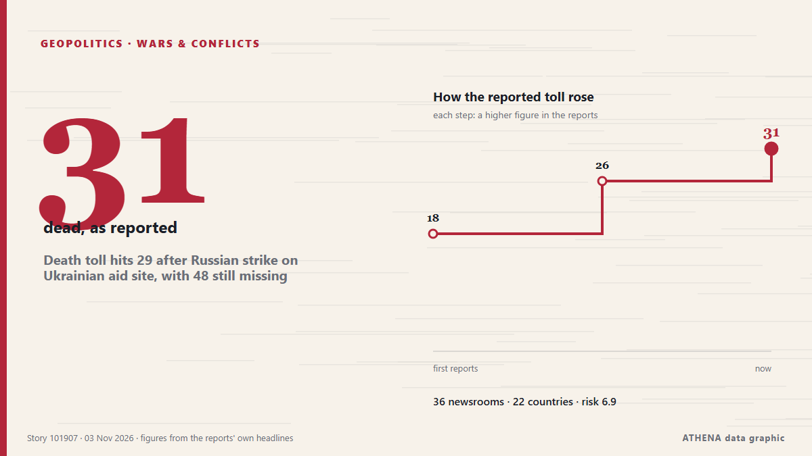

Death toll hits 29 after Russian strike on Ukrainian aid site, with 48 still missing

Russia launched 289 attack drones, 17 ballistic missiles and 59 cruise missiles across nine regions, President Zelenskyy said in an online post that noted the barrage coincided with U.S. elections. из NPR
Независимые источники: 37 изданий в 22 странах, с 2 нояб.; первым сообщил Kyiv Independent; освещение идёт на спад. ATHENA оценивает риск как высокий (6.7/10), прежде всего из-за тяжести описываемого ущерба и географического и отраслевого охвата. Уверенность — 88 % (высокая); подтверждают независимые источники: 37 изданий, средняя надёжность источников — 76 %. СМИ по странам: Великобритания (7), Соединенные Штаты (4), Малайзия (3). Освещение: с 2 нояб. по 3 нояб., 22 ч.
Почему это важно: Полномасштабное вторжение России в Украину началось в феврале 2022 года. Мониторинг следит за боевыми действиями, ударами по инфраструктуре и дипломатией вокруг войны так, как их освещает мировая пресса.
Что изменилось: 31 новых сообщений от 28 редакций за 24 часа до 3 нояб..
Первый заголовок: Russian attacks increase Ukraine's need for foreign aid, Bloomberg report finds
Заголовки приводятся на английском языке, как они были опубликованы.
Коротко в цифрах
Отобрано, оценено и написано по опубликованной методологии ATHENA. Ни один редактор не вмешивается в отдельные события. Как это создаётся ›
| 02 Nov 13:36 UTC | 1 |
|---|---|
| 02 Nov 15:36 UTC | 0 |
| 02 Nov 17:36 UTC | 9 |
| 02 Nov 19:36 UTC | 8 |
| 02 Nov 21:36 UTC | 4 |
| 02 Nov 23:36 UTC | 8 |
| 03 Nov 01:36 UTC | 1 |
| 03 Nov 03:36 UTC | 1 |
| 03 Nov 05:36 UTC | 1 |
| 03 Nov 07:36 UTC | 1 |
| 03 Nov 09:36 UTC | 6 |
| 03 Nov 11:36 UTC | 2 |
| 03 Nov 13:36 UTC | 2 |
| 03 Nov 15:36 UTC | 2 |
| 03 Nov 17:36 UTC | 0 |
| 03 Nov 19:36 UTC | 1 |
| 02 Nov 14:21 UTC | 4.1 |
|---|---|
| 02 Nov 18:55 UTC | 4.7 |
| 02 Nov 19:13 UTC | 5.6 |
| 02 Nov 19:58 UTC | 6.3 |
| 02 Nov 23:11 UTC | 6.2 |
| 03 Nov 02:04 UTC | 7.0 |
| 03 Nov 20:39 UTC | 6.7 |
Откуда эти цифры
Значимость
Риск
Уверенность
Освещение — кто сообщил и когда
заголовок в оригинале · открывает источник- Kyiv Independent · УкраинаRussian attacks increase Ukraine's need for foreign aid, Bloomberg report finds
- Asharq Al-Awsat (English) · Саудовская АравияUkraine Says Russian Strikes on Aid Distribution Point Kill 18
- Al Jazeera English · КатарRussian strike on Ukraine aid hub kills 26 as US announces new peace talks
- ABC News Australia · АвстралияRussian strikes on Ukrainian shelter and aid centre kill 24
- The Irish News (Belfast) · ВеликобританияRussian bomb attacks on aid centre and shelter kill 26, Ukrainian officials say
- Belfast Telegraph · ВеликобританияRussian bomb attacks on aid centre and shelter kill 26, Ukrainian officials say
- BBC News · ВеликобританияRussian bombing kills 31 people at Ukraine aid centre, Kyiv says
- Courthouse News · Соединенные ШтатыUkraine says Russian strikes dash peace progress hopes after more than 20 killed
- Kyiv Independent · УкраинаUkraine war latest: Russian bomb strikes kill 24 at humanitarian aid center in Zaporizhzhia Oblast
- TRT World · ТурцияRussian strikes on aid distribution point kill 18 in Ukraine: Kiev
- SBS News · АвстралияUkraine says Russian strikes dash peace progress hopes after 26 killed
- The New York Times (World) · Соединенные ШтатыRussian Strike on Ukraine Humanitarian Hub Kills Dozens
- Arab News · Саудовская АравияRussia bombs aid center and shelter in southern Ukraine, killing 24, authorities say
- The New Arab · INTRussian strikes kill 26 in Ukraine, dashing peace progress hopes
- Livemint · ИндияUkraine Says Russian Strike on Humanitarian Aid Center Kills 24
- CNA (Channel NewsAsia) · СингапурUkraine says Russian strikes dash peace progress hopes after 24 killed
- Free Malaysia Today · МалайзияUkraine says Russian strikes dash peace progress hopes after 26 killed
- DW English · ГерманияUkraine: At least 26 killed in Russian strikes on aid center
- TheJournal.ie · ИрландияRussian bomb attacks on aid centre and shelter in southern Ukraine kill 26 people
- TRT World · ТурцияUkraine says Russian strikes kill 26 people, dashing hopes for 'progress toward peace'
- MyJoyOnline · ГанаRussian bombing kills 26 people at Ukraine aid centre, Kyiv says
- Xinhua (English) — page reader · КитайUkraine says 18 killed, 27 missing in Russian aerial strike
- New Straits Times · МалайзияUkraine says Russian strikes dash peace hopes after 26 killed
- Malay Mail · МалайзияRussia strikes kill 26 in Ukraine, dealing fresh blow to peace hopes
- The Korea Times · Республика КореяRussia bombs aid center and shelter in southern Ukraine, killing 26, officials say
- The Guardian · ВеликобританияRussia bombs humanitarian hub in Ukraine, killing at least 31 people
- Ada Derana · Шри-ЛанкаRussian bombing kills 26 people at Ukraine aid centre, Kyiv says
- Al Jazeera English · КатарMultiple Russian strikes kill at least 26 at Ukraine aid centre
- France 24 English · ФранцияRussian strikes kill at least 26 in Ukraine after war's longest ceasefire ends
- Times of India · Индия26 killed as Russia strikes Ukraine school used for aid distribution
- The Independent · ВеликобританияUkraine-Russia war latest: Melania Trump to host Kyiv and Moscow for ‘extraordinary’ summit at White House
- People Daily · КенияRussian strike kills 26 people at aid centre in Ukraine, Kyiv says
- The Citizen (Tanzania) · ТанзанияRussian bombing kills 26 in village in southeastern Ukraine
- Arab Times · КувейтDeath toll hits 31 after Russian strike on Ukrainian aid site, with 48 still missing
- ABC News (International) · Соединенные ШтатыUkraine's rescuers deal with grim aftermath of aid shelter bombings as Moscow pounds energy targets
- France 24 English · ФранцияDozens killed, dozens more missing after Russian strike on Ukrainian aid site
- NPR · Соединенные ШтатыDeath toll hits 29 after Russian strike on Ukrainian aid site, with 48 still missing
- CBC News (alternative feed) · КанадаDozens still missing in Russian, guided-bomb attack that killed more than 30 in southern Ukraine
- The Independent · ВеликобританияRussian strike on school kills at least 31 in Ukraine village
- The Irish News (Belfast) · ВеликобританияDeath toll from Russian attack on aid centre rises to 31, officials say